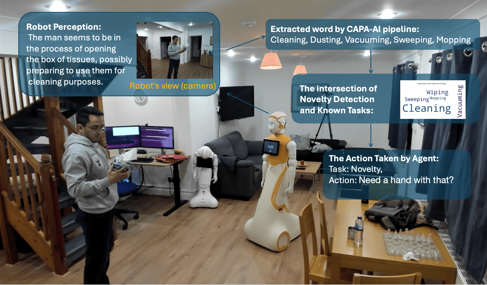
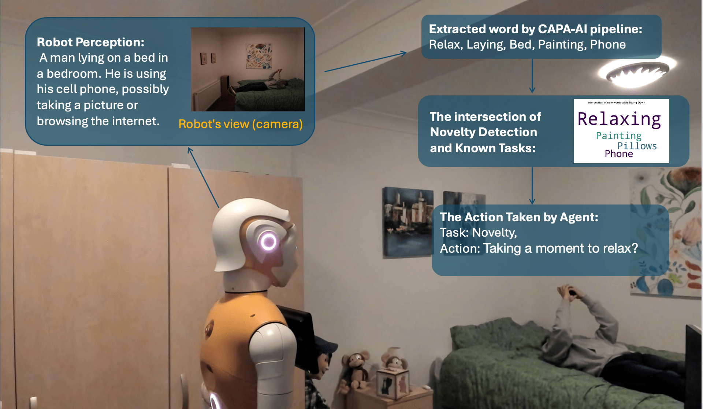

About the Paper
Adapting to novel tasks in human-robot interaction (HRI) is crucial for long-term autonomy, yet remains a major challenge for autonomous agents deployed in unpredictable open-world settings. This paper introduces CAPA-AI, a novel framework that integrates probabilistic novelty detection with continual post-deployment adaptation achieved via transfer learning to address this challenge. The framework's novelty detection component employs conditional probability and the Jaccard Index to identify unfamiliar tasks by quantifying their deviation from the agent's knowledge base of previously learned tasks. Upon detecting a novel task, the agent utilises transfer learning to repurpose prior knowledge and update its models without retraining from scratch. We detail the design of CAPA-AI, including an isolated learning phase for initial skill acquisition and the construction of a dynamic knowledge base. The complete system was deployed on a social robot in real-world HRI scenarios to evaluate its performance. Experimental results demonstrated that the agent accurately detects novel tasks and adapts to them, achieving adaptation and novelty detection accuracies of 80% and 89%, respectively. These findings underscore the efficacy of the proposed approach and highlight a significant step towards robust open-world deployment of AI agents in HRI, where continuous adaptation and the safe handling of unforeseen tasks are essential.
Figure 1: Overview of the CAPA-AI architecture. A reinforcement learning (RL) agent is pre-trained in isolation, while a knowledge base stores task-specific information for novelty detection. When a novel task is detected during real-world operation, the agent leverages transfer learning or its own exploration to adapt, updating both its policy and knowledge base.
Continual Learning & Adaptation: Motivation
Autonomous robots operating in dynamic, human-centred environments constantly face unpredictability—no dataset or pre-training can prepare them for everything. Traditional AI systems are prone to catastrophic forgetting if retrained, or simply ignore novel tasks, which risks safety and erodes user trust.
CAPA-AI addresses this by equipping the robot with two essential abilities:
- Novelty detection: Accurately identifies when an observed task or situation has not been encountered before.
- Continual adaptation: Upon detecting novelty, the robot can re-use related prior knowledge (via transfer learning) to adapt, or gather new experience as needed—all without full retraining or human-in-the-loop supervision.
How the CAPA-AI Architecture Works
Reinforcement Learning & Vision Language Models in CAPA-AI
- Isolated Learning Phase: The RL agent is initially trained on a set of known tasks (e.g., using the RHM dataset). Task-specific experiences and environmental keywords are stored in an Agent Knowledge Base (AKB).
- Novelty Detection Module: During real-world operation, incoming sensor data (video frames) are processed using vision-language models (e.g., LLaVA) and contextual keywords are extracted (e.g., via DeepSeek).
- Probabilistic Novelty Detection: New keywords are compared with the AKB using conditional probability and the Jaccard Index, computing a posterior probability of task similarity. If the similarity is high (>90%), the agent uses its pre-trained model; for partial similarity (60-89%), it adapts via transfer learning. For genuinely novel cases (<60%), exploration is triggered.
- Transfer Learning: The agent updates its RL policy using strategies from similar tasks, rapidly adapting to the new task and updating its AKB.
Video Explanation
Video: Detailed explanation of CAPA-AI framework - how probabilistic novelty detection and transfer learning enable continual adaptation in human-robot interaction.
Figure 2: Example result of the novelty detection pipeline. Posterior probabilities and the Jaccard Index are used to quantify how closely new observations match known tasks (here, the "Drinking" activity). This enables reliable detection and triggers adaptation only when truly necessary.
Step-by-Step Adaptation and Results
Presented at IEEE RO-MAN 2025 Conference
- Pre-training: CAPA-AI is pre-trained using the RHM dataset on 14 daily human activities. For each, the agent stores both policy knowledge and a vocabulary of environmental/contextual keywords.
- Simulation Evaluation: The framework is tested on the EatSense and Polar datasets (which contain new, partially overlapping tasks). CAPA-AI detects and adapts to novel activities, transferring knowledge from the most similar tasks.
- Real-World Deployment: CAPA-AI is implemented on the ARI humanoid robot, interacting with users performing both familiar and unfamiliar tasks in real environments.
Figure 3: Evaluation workflow: CAPA-AI is pre-trained, then deployed in both simulated (EatSense/Polar) and real-world HRI scenarios, where it processes sensory data and adapts in real time.
- Sample Scenario: In one real-world test, the robot observes the action "using tissue"—not seen during training. CAPA-AI's ND module classifies this as novel but similar to "cleaning," so transfer learning is triggered. The agent updates its behaviour, improving performance in subsequent encounters.
- Accuracy: CAPA-AI achieves 89% novelty detection accuracy and 80% adaptation accuracy in real-world tests. The approach is robust to sensor noise and ambiguous activities.
a) Task: Drinking, CAPA-AI Decision: Drinking
b) Task: Using Tissue, CAPA-AI Decision: Novelty, Similar Task: Cleaning
c) Task: Laying, CAPA-AI Decision: Novelty, Similar Task: Sitting Down
Figure 4: CAPA-AI real-world decisions: (a) "Drinking" correctly identified as familiar; (b) "Using tissue" detected as a novel action and mapped to "cleaning"; (c) "Lying down" treated as novel but similar to "sitting down," showing CAPA-AI's fine-grained, explainable adaptation.
Why It Matters
CAPA-AI advances the state of the art in robot autonomy and trust by:
- Enabling safe, continual adaptation in dynamic environments—no more "frozen" agents!
- Providing probabilistic, explainable decisions on when to adapt and what to adapt from
- Reducing risk of catastrophic forgetting or inappropriate generalisation
- Improving HRI by making robots more reliable, responsive, and aware of their own limitations
Open Science & Collaboration
Interested in collaborating, adapting, or extending CAPA-AI? We support open, reproducible science and welcome new partnerships to push forward robust and adaptive agentic AI.
Full Paper & Code
Research outputs will be available following conference presentation and publication.